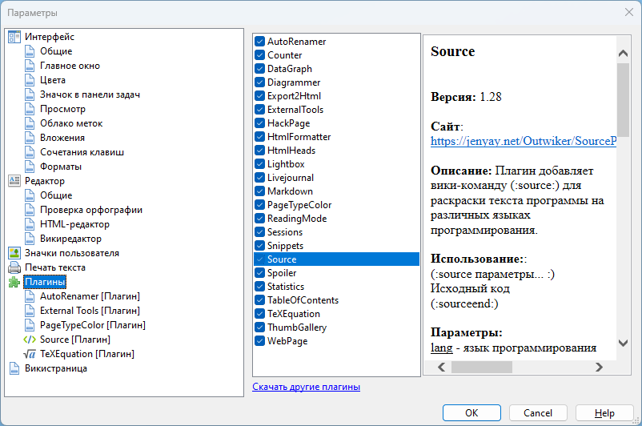

Плагины

В данном разделе можно посмотреть список установленных плагинов. При выборе плагина будет отображаться информация о нем: название, номер версии, краткое описание и, если есть, ссылка на сайт этого плагина.
Здесь же можно временно отключить ненужные в данный момент плагины (например, чтобы не усложнять интерфейс программы), не удаляя плагин.